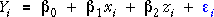
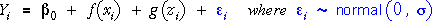

Assumption of additivity
Both the linear model,

and the quadratic model

are of the general form

In this type of model, the effects of X and Z are additive on Y.
In additive models, the expected response is affected in the same way by changes to x whatever the value of z.
In a similar way, the expected response is affected in the same way by changes to z whatever the value of x. In additive models, we say that there is no interaction between the effects of X and Z. (We will describe models with interaction in the following page.)
When additive models are displayed as a surface in 3 dimensions,
Model that is linear in X and Z
The following model only has linear terms in X and Z.
Click the y-z rotation button and observe that all lines are parallel. At every x-value, the relationship is linear between Y and z with the same slope. The coefficient of x in the model gives the effect of increasing z by 1, whatever the value of x.
Now click the y-x rotation button and note that the lines are again parallel. Increasing x by 1 has the same effect on Y, whatever the value of z.
Quadratic model
The following diagram adds quadratic terms in x and z.
Again click the y-z and y-x buttons and observe that:
The quadratic curves are 'parallel' — they have the same curvatures and slopes.
The parallel curves are a consequence of the additivity of the effects of X and Z in the two models.